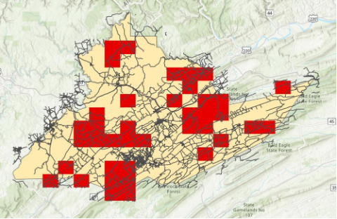

Project Objectives
This final project demonstrates advanced GIS skills developed over ten weeks of coursework in Geography 483. The analysis utilizes raster-based techniques to identify optimal conservation areas in Centre County, Pennsylvania, based on multiple environmental and accessibility criteria.
Skills Demonstrated
Attribute Queries
Selecting features based on specific criteria
Buffering Features
Multi-distance buffer analysis
Field Calculations
Computing derived attributes
Raster Analysis
Hillshade, slope, and suitability modeling
Spatial Joins
Combining multiple datasets
Map Layout Design
Professional cartographic output
Methodology & Analysis
Step 1: Species Richness Assessment
The analysis began by joining the species-rich table with the study areas layer. A new field was calculated to determine the total number of mammalian and bird species in each area.
Criteria 1: Biodiversity Threshold
- Study areas must contain more than 70 mammalian and bird species
Step 2: Road Density Analysis
To minimize human disturbance, roads were buffered at varying distances based on road type: interstates at 100 meters, highways at 50 meters, and local roads at 20 meters. The percentage of each study area covered by buffered roads was then calculated by subtracting the shaded area from the total area and multiplying by 100.
Criteria 2: Road Impact Limitation
- Interstates: 100-meter buffer
- Highways: 50-meter buffer
- Local roads: 20-meter buffer
- Total buffered road area must be less than 10% of study area
A Union operation was performed to combine road buffer areas with the species-rich study areas, creating an integrated dataset for analysis. The Union tool allowed the features and attributes from both layers to be merged into a single output layer.
Step 3: Raster Reclassification
The first raster analysis identified areas meeting the road percentage criteria. Attributes were reclassified into binary categories: areas with less than 10% road coverage received a value of 1 (suitable), while areas exceeding this threshold received a value of 0 (unsuitable).
Step 4: Land Ownership Analysis
Additional queries were performed to filter areas based on land ownership. A raster analysis was conducted to distinguish between publicly and privately owned land.
Criteria 3: Land Ownership
- Areas must be publicly owned (value = 1)
- Privately owned land excluded from consideration (value = 0)
Step 5: Environmental Suitability Analysis
The final raster analysis incorporated additional environmental factors including forest coverage, elevation, and solar exposure. Hillshade values were calculated to measure areas with optimal sunlight exposure and lower elevations, both critical factors for wildlife habitat suitability. The Hillshade function is an integral component of raster analysis, particularly for projects involving natural resources that depend on adequate sunlight and favorable topography.
One particularly valuable technique employed in this analysis was the Slope Analysis method, which measures the gradient of raster cells. This capability proved extremely useful given that raster analysis frequently involves elevation-based assessments.


Conclusions
Upon completion of the analysis of animal conservation areas in Centre County, Pennsylvania, opportunities for conservation areas were identified throughout the county. The raster analysis approach was essential for this project because the study measured continuous attributes such as forest coverage and road density. Similar to the previous vineyard site selection project, hillshade values were instrumental in identifying areas with appropriate sunlight exposure and lower elevations, both critical for thriving natural resources.
Political Geography Perspective: Centre County's Electoral Shift
Centre County presents a fascinating case study in electoral geography. The county last voted for a Republican presidential candidate in 2004 when George W. Bush carried the county. Since then, Democrats have won every presidential election in Centre County, representing a significant political realignment.
2004 Election - George W. Bush Victory
2020 Election - Joe Biden Victory
This transformation is particularly notable because Centre County is surrounded by heavily Republican counties, making it a Democratic island in a Republican region. The shift perfectly illustrates the broader national trend of college-educated voters increasingly supporting Democratic candidates. Penn State University's presence in the county is likely a key factor in this political realignment—without the university, Centre County would very likely remain Republican-leaning.
Sources
Pro.arcgis.com (N.D.). Union (Analysis). Retrieved December 13th, 2023, from Union (Analysis)—ArcGIS Pro | Documentation
Image.lasermagic.net (N.D.). Penn State Nittany Lions. Retrieved December 13th, 2023
Pro.arcgis.com (N.D.). Hillshade Function. Retrieved December 13th, 2023, from Hillshade function—ArcGIS Pro | Documentation
Pro.Arcgis.com (N.D.). Slope (Spatial Analyst). Retrieved December 13th, 2023, from Slope (Spatial Analyst)—ArcGIS Pro | Documentation
Uselectionatlas.org (N.D.). United States Presidential Election Results. Retrieved December 13th, 2023, from Dave Leip's Atlas of U.S. Presidential Elections
Wikipedia.org (N.D.). 2004 United States Election in Pennsylvania. Retrieved December 13th, 2023, from 2004 United States presidential election in Pennsylvania - Wikipedia
Wikipedia.org (N.D.). 2020 United States Presidential Election in Pennsylvania. Retrieved December 13th, 2023, from 2020 United States presidential election in Pennsylvania - Wikipedia